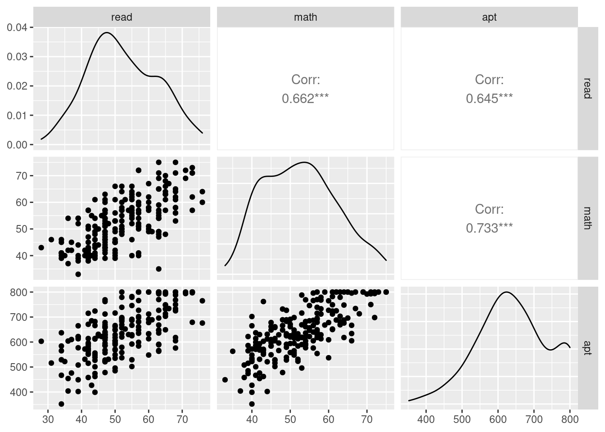

library(ggplot2)
library(GGally)
library(VGAM)
library(stargazer)14 Tobit Models
The tobit model, also called a censored regression model, is designed to estimate linear relationships between variables when there is either left- or right-censoring in the dependent variable.
Censoring from above takes place when cases with a value at or above some threshold, all take on the value of that threshold, so that the true value might be equal to the threshold, but it might also be higher.
In the case of censoring from below, values those that fall at or below some threshold are censored.
14.1 Install packages
14.2 Useful data
data <- read.csv("data/tobit.csv")The dataset contains 200 observations.
The academic aptitude variable is “apt”, the reading test scores are “read” and math test scores are “math”.
The variable prog is the type of program the student is in, it is a categorical (nominal) variable that takes on three values, academic (prog = 1), general (prog = 2), and vocational (prog = 3).
The variable id is an identification variable.
Now let’s look at the data descriptively.
summary(data) id read math prog
Min. : 1.00 Min. :28.00 Min. :33.00 Min. :1.000
1st Qu.: 50.75 1st Qu.:44.00 1st Qu.:45.00 1st Qu.:2.000
Median :100.50 Median :50.00 Median :52.00 Median :2.000
Mean :100.50 Mean :52.23 Mean :52.65 Mean :2.025
3rd Qu.:150.25 3rd Qu.:60.00 3rd Qu.:59.00 3rd Qu.:2.250
Max. :200.00 Max. :76.00 Max. :75.00 Max. :3.000
apt
Min. :352.0
1st Qu.:575.5
Median :633.0
Mean :640.0
3rd Qu.:705.2
Max. :800.0 f <- function(x, var, bw = 15) {
dnorm(x, mean = mean(var), sd(var)) * length(var) * bw
}p <- ggplot(data, aes(x = apt, fill=prog))p + stat_bin(binwidth=15) +
stat_function(fun = f, size = 1,
args = list(var = data$apt))p + stat_bin(binwidth = 1) + stat_function(fun = f, size = 1, args = list(var = data$apt,
bw = 1))cor(data[, c("read", "math", "apt")]) read math apt
read 1.0000000 0.6622801 0.6451215
math 0.6622801 1.0000000 0.7332702
apt 0.6451215 0.7332702 1.0000000ggpairs(data[, c("read", "math", "apt")])
summary(m <- vglm(apt ~ read + math + prog, tobit(Upper = 800), data = data))
Call:
vglm(formula = apt ~ read + math + prog, family = tobit(Upper = 800),
data = data)
Coefficients:
Estimate Std. Error z value Pr(>|z|)
(Intercept):1 222.29186 34.25181 6.490 8.59e-11 ***
(Intercept):2 4.18746 0.05236 79.973 < 2e-16 ***
read 2.78781 0.61397 4.541 5.61e-06 ***
math 6.11310 0.67896 9.004 < 2e-16 ***
prog -22.74852 6.86965 -3.311 0.000928 ***
---
Signif. codes: 0 '***' 0.001 '**' 0.01 '*' 0.05 '.' 0.1 ' ' 1
Names of linear predictors: mu, loglink(sd)
Log-likelihood: -1041.533 on 395 degrees of freedom
Number of Fisher scoring iterations: 5
No Hauck-Donner effect found in any of the estimates